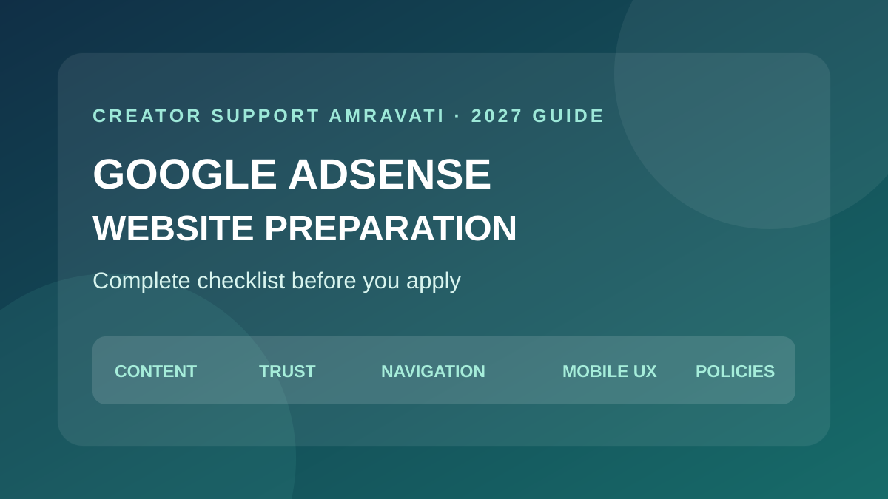
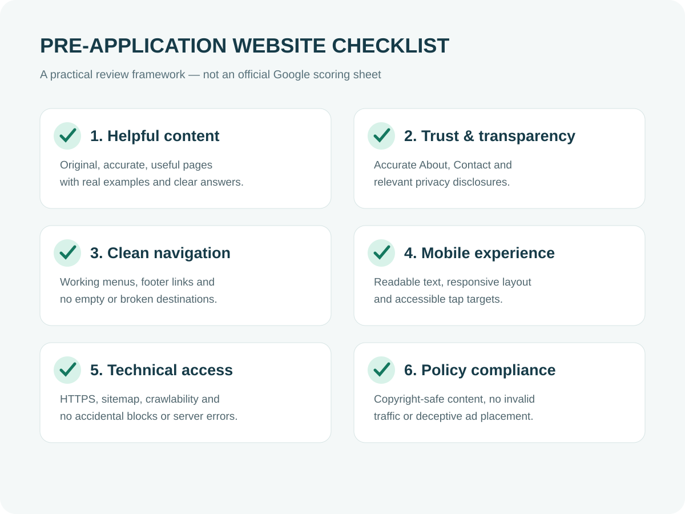

Google AdSense Approval Ke Liye Website Ko Kaise Taiyar Karein? Complete Checklist (2027 Guide)
Website banana aur articles publish karna shuruaat hai. AdSense ke liye apply karne se pehle website ko readers ke liye genuinely useful, easy to navigate, transparent aur programme policies ke anuroop banana zaroori hai. Is guide mein hum practical preparation steps cover karenge—lekin ek baat clear rakhein: Google approval ki guarantee na article count deta hai, na koi design trick.

- AdSense review ke liye website ke kaun se areas important hain
- Content, trust pages, navigation aur mobile experience ka checklist
- AdSense-ready aur rejection-prone website ke beech practical differences
- Apply karne se pehle common mistakes aur FAQs
1. Google AdSense Review Mein Website Ke Kaun Se Areas Important Hain?
AdSense review ko ek single score ya secret checklist samajhna sahi nahi hoga. Google ki published programme policies aur eligibility guidance ke mutabik publisher ko apni site, content, ownership aur ad placement ko applicable requirements ke anuroop rakhna hota hai. Practical preparation ke liye in areas par dhyan dein:
- Original aur useful content: Pages visitors ko clear information, original explanation, examples ya useful resources dein. Sirf words ki length badhana quality ka substitute nahi.
- Clear navigation: Main sections, important pages aur contact information aasani se milne chahiye. Broken links, empty sections aur misleading buttons fix karein.
- Transparency: Site ka purpose aur publisher identity samajh aaye. About aur Contact pages visitors ko real context aur working contact route dein.
- Policy compliance: Copyright, prohibited content, deceptive behaviour aur invalid traffic se judi policies samjhein. Sirf ad code lagana policy compliance nahi banata.
- Technical access: Website public, stable aur Google ke liye accessible honi chahiye. Login wall, accidental noindex, robots blocks ya server errors ko check karein.
2. Website Ko AdSense-Ready Banane Ke 6 Practical Steps
Step 1: Reader-first, original content publish karein
Apne topic par aise pages banayein jo real audience questions ka jawab dein. Har article mein zaroorat ke hisaab se clear headings, examples, screenshots ya original visuals, steps aur useful references add karein. Word count ko target banane ke bajay topic ko complete aur understandable banayein.
- Apne experience, testing ya research se useful details add karein.
- Claims, dates, prices aur technical instructions verify karein.
- AI tools use karte hain toh output ko fact-check, edit aur genuinely useful banayein; repetitive generic pages publish na karein.
- Duplicate, scraped ya lightly rewritten pages ko improve karein ya remove/consolidate karne par vichar karein.
Step 2: Essential information aur policy pages complete karein
About, Contact aur Privacy Policy jaise pages visitors ko site aur data practices samajhne mein madad karte hain. Apne business model aur site ke actual features ke hisaab se Terms, Disclaimer ya editorial policy bhi publish karein. Sirf page bana dena kaafi nahi—content accurate, current aur easily accessible hona chahiye.
- About Us: Website ka purpose, kis audience ke liye hai aur ise kaun maintain karta hai.
- Contact Us: Working email, form ya suitable contact route. Fake details ya dead forms na rakhein.
- Privacy Policy: Cookies, analytics, data collection aur advertising partners ke baare mein accurate disclosure. Applicable privacy requirements aur Google policies ko follow karein.
- Terms / Disclaimer / Editorial Policy: Jahan relevant ho, site ke use, informational limitations, corrections aur content standards ko explain karein.
Step 3: Header, footer aur categories ko consistent rakhein
Top menu aur footer mein sirf useful, working destinations rakhein. Har menu item ko click karke test karein. Empty categories, placeholder pages, 404 errors, redirect loops aur confusing labels ko fix karein. Important pages tak pahunchne ke liye visitors ko multiple unnecessary clicks na karne padein.
Step 4: Mobile usability aur page performance improve karein
Phone par pages ko manually test karein. Text readable ho, navigation open/close ho, buttons tap karne layak hon aur images layout ko break na karein. Images ko suitable dimensions aur compressed formats mein serve karein. Unnecessary scripts aur intrusive pop-ups se bachein. Speed helpful hai, lekin koi single PageSpeed score AdSense approval guarantee nahi karta.
Step 5: Search Console, sitemap aur crawlability check karein
Google Search Console mein domain/property verify karein, XML sitemap submit karein aur important URLs ka URL Inspection use karke crawl/indexing status samjhein. Accidental noindex, robots.txt blocks, canonical mistakes, broken internal links, SSL errors aur server failures ko fix karein. Yaad rakhein: AdSense approval ke liye har URL ka indexed hona universal condition nahi; lekin public pages ka technically accessible hona zaroori practical hygiene hai.
Step 6: Har page par clear value aur responsible ad experience rakhein
Tools, templates, case studies aur practical guides tabhi add karein jab woh audience ki need solve karte hon. Navigation ko ads se confuse na karein, accidental clicks encourage na karein aur ads ko content ya download buttons jaisa disguise na karein. Invalid traffic generate karne, apne ads click karne ya users se clicks maangne se bachein.

3. AdSense-Ready Website vs. Rejection-Prone Website
| Website Area | Risk-prone pattern | Better preparation |
|---|---|---|
| Content | Thin, copied, repetitive ya unclear pages | Original, accurate aur audience-focused information |
| Article count | Sirf number poora karne ke liye low-value posts | Topic coverage aur usefulness par based content plan; koi fixed official count nahi |
| Trust | Missing ya misleading publisher information | Accurate About, Contact aur relevant privacy disclosures |
| Navigation | Broken links, empty categories, confusing menus | Consistent header/footer aur working internal links |
| Mobile UX | Overlapping text, hard-to-tap controls, intrusive pop-ups | Readable, responsive pages aur predictable navigation |
| Technical health | Server errors, accidental blocks, incorrect canonical | Stable hosting, crawlable pages, valid sitemap and HTTPS |
| Ad behaviour | Self-clicks, incentivized clicks, deceptive placements | Google policies followed; ads clearly distinct from navigation |
4. Apply Karne Se Pehle Ki 5 Common Mistakes
- Jaldi application submit karna: Pehle public pages, navigation, content aur policy basics review karein. Calendar deadline ke pressure mein incomplete site submit na karein.
- Dusri websites ka content ya visuals copy karna: Copyright permission aur proper licensing ka dhyan rakhein. Attribution dena har copied material ko automatically permitted nahi banata.
- Raw AI output ko bina review publish karna: Facts verify karein, original examples add karein aur repetitive pages se bachein. Tool se likha hona quality ka proof nahi.
- Pop-ups, redirects aur misleading buttons: Users ko content tak pahunchne dein. Navigation aur ads ko confuse karne wale layouts avoid karein.
- Application ke baad site ko unavailable chhodna: Review ke dauran website live, stable aur accessible rakhein. Important pages ko bina reason delete ya block na karein.
5. Practical Pre-Application Checklist
- ☐ Website ka purpose aur target audience clearly samajh aate hain.
- ☐ Main articles original, accurate aur genuinely useful hain.
- ☐ About, Contact aur Privacy Policy pages live aur accessible hain.
- ☐ Header, footer, category links aur CTA buttons test kiye gaye hain.
- ☐ Mobile par layout, text aur navigation properly work karte hain.
- ☐ HTTPS active hai; important pages par server errors nahi.
- ☐ Sitemap submitted hai aur accidental noindex/robots blocks check kiye hain.
- ☐ Copyright aur Google Publisher Policies review ki hain.
- ☐ Ads ko navigation, download links ya content controls ki tarah disguise nahi kiya gaya.
- ☐ Invalid traffic, self-clicks ya incentivized clicks generate nahi kiye ja rahe.
- ☐ AdSense account details aur site ownership setup accurate hain.
Aksar Puche Jaane Wale Sawal (FAQs)
1. Kya nayi domain par Google AdSense approval mil sakta hai?
Haan, nayi domain bhi review ke liye eligible ho sakti hai. Domain age apne aap approval ya rejection decide nahi karti. Website ko current AdSense eligibility requirements aur programme policies follow karni hongi.
2. AdSense approval ke liye minimum kitne articles hone chahiye?
Google koi universal minimum article count publish nahi karta. 15–20 detailed posts ek practical content-planning target ho sakte hain, lekin ise official rule na samjhein. Kam pages wali focused site bhi useful ho sakti hai; zyada pages wali site mein bhi low-value content ho sakta hai.
3. Agar AdSense reject ho jaye toh kya karna chahiye?
Account mein diya gaya exact rejection reason padhein. Sirf aur articles add karne ke bajay affected pages, site navigation, originality, policy compliance aur technical accessibility audit karein. Changes complete hone par dobara review request karein; approval guaranteed nahi hota.
4. Kya static HTML/CSS/JS websites par AdSense lag sakta hai?
Haan, static website par bhi AdSense use ho sakta hai. Site ownership verify karne, required code place karne aur public pages ko accessible rakhne ke liye suitable setup hona chahiye; saath hi policies follow honi chahiye.
5. Kya Search Console mein har page indexed hona zaroori hai?
Har URL ka indexed hona AdSense approval ki universal published condition nahi. Search Console phir bhi crawlability, sitemap aur technical issues identify karne ke liye useful hai. Important public content ko accessible aur technically healthy rakhein.
Useful Tools & Resources
- Creator Packaging Kit — titles, descriptions aur content packaging ke liye CSA tool.
- CSA Website Development & SEO Services — website structure, responsive design aur search setup ke liye.
- Contact Creator Support Amravati — website review ya consultation ke liye.
Suggested & Related Articles
- AdSense-Ready Blog Kaise Banayein? Complete SEO Checklist — individual blog article ko useful aur structured banane ke elements.
- 2027 Ke Liye Indian Creators Aur Businesses Ka Complete Growth Blueprint — content, audience aur digital growth ka broader plan.
- Ek Video Se 10 Content Pieces Kaise Banayein? — ek pillar topic se useful content formats plan karne ka system.
Helpful Official Guidelines & References
- Google AdSense Help: Eligibility requirements — official account and site eligibility guidance.
- Google AdSense Programme Policies — publisher policy requirements.
- Google Search Central: Creating helpful, reliable, people-first content.
About the Author
Rajkumar Chavhan ek digital marketing specialist (8+ years experience) aur Creator Support Amravati (CSA) ke founder hain. Woh web development, SEO, content strategy, YouTube aur social media packaging ke zariye creators, educators aur businesses ko unki digital presence grow karne mein madad karte hain.
- Website: creatorsupportamravati.in
- Studio & Office: Vyanktesh Complex, Shop No. F-101, Mahendra Colony, Naredi Nagar Road, Amravati, Maharashtra 444604
Editorial Disclosure: Yeh guide educational aur informational purpose ke liye hai. Google AdSense application ka final decision Google ki current eligibility requirements, programme policies aur website review par depend karta hai. Is article mein kisi approval, ranking ya earning ki guarantee nahi di gayi hai.